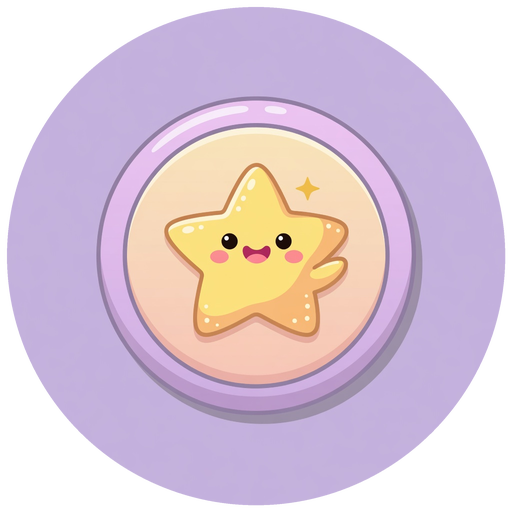
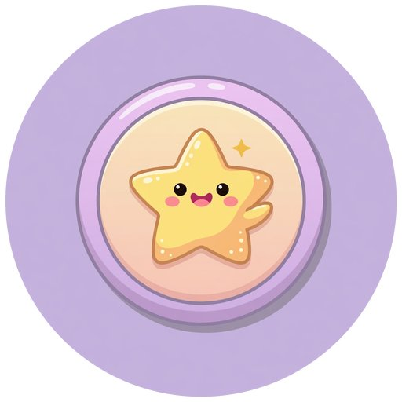

무손실 (Lossless)
원본 픽셀을 그대로 복원합니다. 저장을 반복해도 화질이 안 깎입니다.
- PNG · WebP(무손실) · AVIF(무손실) · GIF(256색)
- 선명한 라인·로고·UI·스크린샷
- 사진에는 용량이 큼
같은 그림이라도 포맷에 따라 무손실 여부·알파(투명)·애니메이션·용량·호환성이 완전히 달라집니다.
이 문서는 이 저장소의 badge_star 에셋을 각 포맷으로 실제 인코딩한 진짜 용량·화질로
“언제 뭘 쓸지”를 정리합니다.
| 포맷 | 압축 | 알파 | 애니 | 대표 용도 | 평가 |
|---|---|---|---|---|---|
PNG .png |
무손실 | 지원 (8bit) | APNG 별도 | UI·로고·투명·아이콘 | 무손실 표준 |
JPEG .jpg |
손실 | 없음 | 없음 | 사진·불투명 썸네일 | 투명 불가 |
GIF .gif |
무손실(256색) | 1비트(단순) | 지원 | 단순 애니·레거시 | 비효율 |
WebP .webp |
손실·무손실 | 지원 | 지원 | 웹 범용 (호환 넓음) | 웹 기본 |
AVIF .avif |
손실·무손실 | 지원 | 지원 | 최신·최대 압축 | 고효율 |
원본 픽셀을 그대로 복원합니다. 저장을 반복해도 화질이 안 깎입니다.
눈에 덜 띄는 정보를 버려 용량을 크게 줄입니다. 품질(quality) 값으로 조절합니다.
아래는 이 저장소의 배지를 원형 알파로 잘라낸 이미지를 두 포맷으로 저장한 실제 결과입니다. 체커(격자) 배경이 비치면 투명, 안 비치면 불투명입니다.


동일한 512×512 알파 배지를 각 포맷으로 인코딩한 실제 바이트입니다. (막대는 PNG=100% 기준. 주황 막대는 알파를 잃는 JPEG.)
| 방식 | 색·품질 | 알파 | 용량 | 메모 |
|---|---|---|---|---|
| GIF | 256색 · 밴딩 | 1비트 | 큼 | 호환성만 장점, 화질·용량 불리 |
| APNG | 무손실 풀컬러 | 완전 지원 | 큼 | 짧고 선명한 투명 애니 |
| 애니 WebP | 손실/무손실 | 지원 | 작음 | 웹에서 GIF 대체 1순위 |
| 애니 AVIF | 고효율 | 지원 | 가장 작음 | 최신 브라우저·최대 압축 |
| 비디오(MP4/WebM) | 매우 효율적 | 보통 없음 | 매우 작음 | 긴 클립은 GIF보다 영상이 정답 |
압축률은 최고지만 인코딩이 느리고 아주 구형 환경은 지원이 약합니다.
넓은 호환성이 필요하면 WebP, 최대 압축·최신 타깃이면 AVIF를 씁니다. 실무에선 둘 다 굽고 <picture>로 폴백을 주기도 합니다.
투명 영역이 흰색/검은색 배경으로 채워집니다. 위 3번 섹션의 실제 이미지가 그 예입니다. 둥근 배지가 사각형이 되는 순간이죠. 투명이 필요하면 JPEG를 피하세요.
순전히 호환성·관성 때문입니다. 화질(256색)·용량 모두 불리해서, 새로 만든다면 애니는 WebP/AVIF, 긴 건 영상이 낫습니다.
보통 그렇습니다. 이 배지도 PNG 160KB → 무손실 WebP 92KB로 줄었습니다. 투명·무손실이 필요하면서 용량도 줄이고 싶을 때 좋은 선택입니다.
웹 사진은 대략 WebP/JPEG Q75~85, AVIF Q50~65가 무난합니다. 정답은 눈으로 확인하는 것 — WebP는 위 스크러버로 품질별 차이를 직접 비교해 보세요.
래스터 배포 포맷은 이 문서가 다루고, 아이콘 전용(ICO)·벡터(SVG)는 허브의 아이콘 파일 포맷 가이드에서 함께 봅니다.
| 하고 싶은 일 | 추천 | 피하기 |
|---|---|---|
| 투명 로고/아이콘 배포 | PNG 또는 WebP/AVIF | JPEG |
| 사진을 가볍게 | AVIF / WebP | PNG(무거움) |
| 최대 압축 (알파 포함) | AVIF | GIF, BMP |
| 넓은 호환 + 작은 용량 | WebP | — |
| 짧은 애니메이션 | WebP/AVIF 애니 | GIF(가능하면) |
| 작업 원본 보관 | PNG / 무손실 | 손실 재저장 |